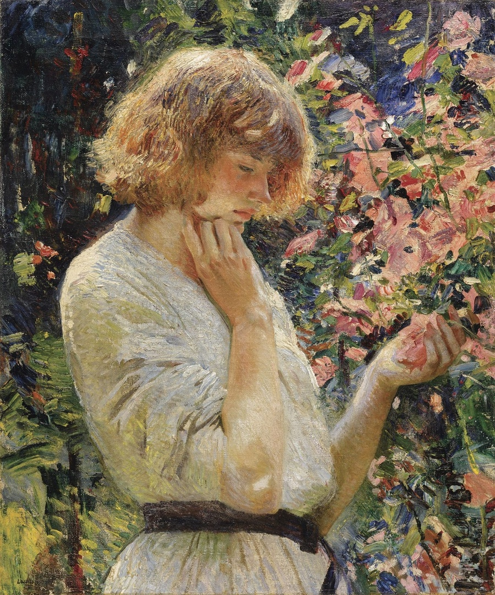
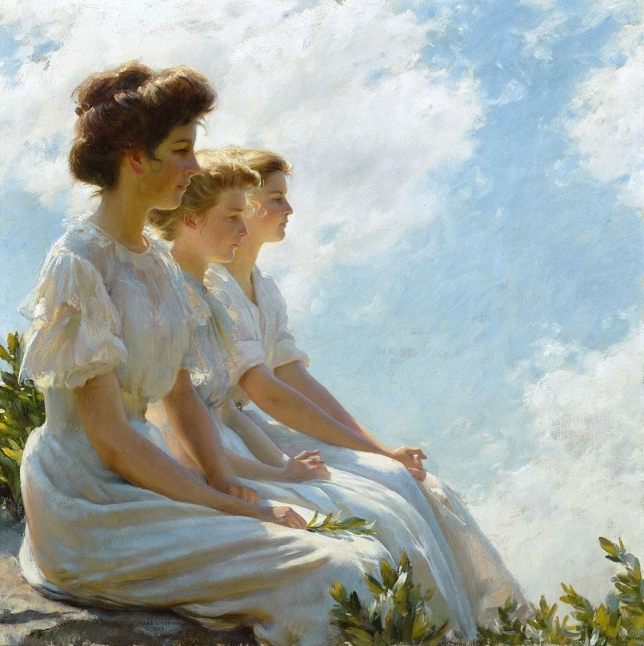
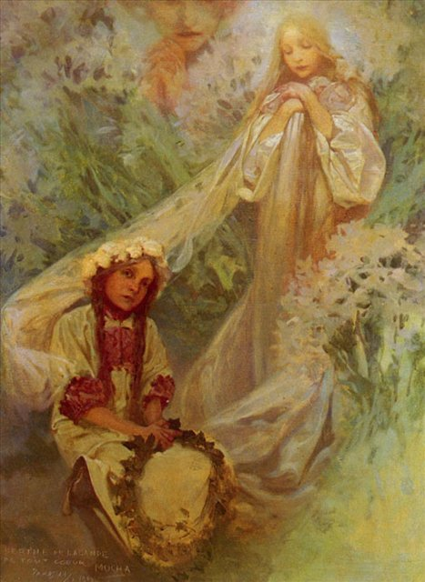

Британская художница Лора Найт рисовала мальвы в своем саду
на заднем дворе, когда жила в Корнуолле. Она и ее муж Гарольд работали
в округе и были членами местных художественных сообществ.
Картина считается шедевром британского импрессионизма, с ее яркими
красками и густыми, бесстрастными мазками.
Молодая женщина в белом летнем платье с узким черным поясом стоит
в профиль. Окруженная высокими цветами, яркий свет жаркого солнца
освещает ее золотисто-рыжие волосы. Она держит в руке один из цветков,
задумчиво глядя вниз.
Создавая картину на природе, художница приравнивает красоту девушки к мальвам.
Когда Найт впервые встретилась с моделью Долли, она сделала похожее сравнение.
В своей автобиографии она написала: "Вернувшись домой, мы
обнаружили модель, ожидающую нас в нашем саду.
Она сама выглядела подсолнухом среди подсолнухов.
Я сразу же наняла ее."
Подробнее

Лора Найт / Мальва, ? г.
В 1903 году американский художник Чарльз Кортни Карран был приглашен
в художественную колонию в Крэгсмуре, недалеко от Элленвилля в долине реки Гудзон.
Община так полюбила его, что Карран провел там лето со своей семьей, и даже построил в
этом районе дом в 1910 году. Естественно, это место стало декорацией для многих его картин.
Одна из них, "На высотах", является представителем отличительного стиля
импрессионизма, который художник разработал в Крэгсмуре. Три очаровательные
молодые женщины, представленные в профиль, одеты в белые летние платья. Очерченные ярким
солнечным светом, они вырисовываются на фоне голубого неба; они занимают
большую часть композиции. Взгромоздившись высоко на скалы, они задумчиво смотрят
в пространство перед собой.

Чарльз Кортни Карран / На высотах, ? г.
Славянский цикл картин чешского модерниста Альфонса Мухи ознаменовался
появлением истинных женщин, как принято говорить в мире искусства,
- альфонсовских дам. Именно этот цикл был характерен славянскими мотивами,
пышными красавицами и элементами языческой культуры. «Мария – Мадонна Лилий»
- картина из вышеуказанной коллекции.
В отличие от остальных работ «Мадонна Лилий» - очень
трогательное повествование, нежное по сути, теплое и по-настоящему
символичное. Юная красавица – девочка и ее оберег – Мадонна застыли
в покорном спокойствии. Мимолетно поднятый взгляд девочки говорит
о занятости интересным занятием – плетением венка из бордовой травы.
Ее маленькие пальчики сплелись со стеблями, умелыми движениями она
соединяет цветок – к цветку растительную корону.
«Не мешайте мне, не говорите, не дышите…», - говорят ее маленькие коричневые глаза.

Альфонс Муха / Мадонна лилий, 1921 г.